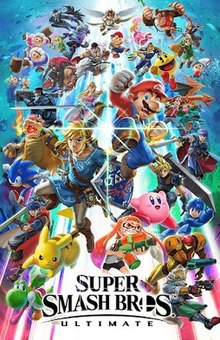

Super Smash Bros. Ultimate[a] is a 2018 crossover fighting game developed by Bandai Namco Studios and Sora Ltd. and published by Nintendo for the Nintendo Switch. It is the fifth[b] installment in the Super Smash Bros. series, succeeding Super Smash Bros. for Nintendo 3DS and Wii U (2014). The game follows the series' traditional style of gameplay, in which players control one of the various characters and use attacks to weaken their opponents and knock them out of an arena. It features a wide variety of game modes, including a single-player campaign and multiplayer versus modes. Ultimate features 89 playable fighters, including all characters from previous Super Smash Bros. games as well as newcomers. The roster ranges from Nintendo characters to those from third-party franchises.
Super Smash Bros. Ultimate is a platform fighter for up to eight players in which characters from Nintendo games and third-party franchises fight to knock each other out of an arena. Each player has a percentage meter which raises as they take damage, thus increasing the knockback they take and making them easier to launch in the air and out of the arena.[3] Standard battles use one of three victory conditions: Timed, where players aim to win the most points by defeating opponents within a time limit; Stock, where players have a set number of lives and aim to be the last player standing; and Stamina, where players reduce their opponent's health down to zero to defeat them. Players can adjust the rules to their liking and save them as presets for future matches.[4]
Super Smash Bros. Ultimate was developed by Bandai Namco Studios and Sora Ltd., the same studios that developed Super Smash Bros. for Nintendo 3DS and Wii U, for the Nintendo Switch, with series creator Masahiro Sakurai returning as game director.[32] Unlike previous Super Smash Bros. games, the team was not assembled from the ground up, which sped up preparation time.[52] The project plan for the game was in the works by December 2015, when the DLC for 3DS and Wii U was in development,[53] and finished after it was completed.[54] Staff gathering was done soon afterward.[53] The development period was shorter compared to previous entries in the series.[55] Hatena assisted with the development of some elements,[56] and tri-Crescendo contributed to programming and design.[57]
EVO 2019, held on August 2–4, 2019, featured Ultimate as one of its main events. It was the largest offline Smash Bros. tournament of all time, with 3,534 entrants signed up.[147] It set a new record for EVO concurrent viewership, with over 279,000 viewers during Top 8.[148] On May 8–10, 2020, top Super Smash Bros. Melee player Hungrybox partnered with NFL running back Le'Veon Bell and esports organization Team Liquid to host The Box, an online tournament with a $10,000 prize pool.[149][150] With over 8,000 entrants, it was the largest online Smash Bros. tournament of all time.[151][152]